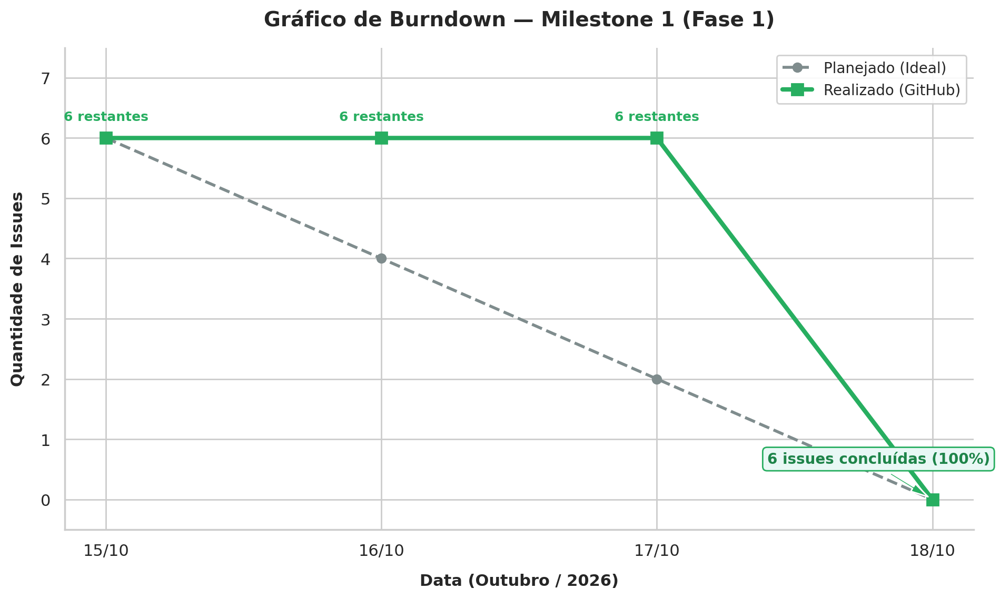

Acompanhamento do Projeto¶
1. Introdução¶
O acompanhamento do projeto utiliza dados do repositório Git para observar a evolução das atividades, a distribuição do trabalho e o cumprimento do planejamento da equipe.
Os dados apresentados nesta página servem como referência para a aplicação das métricas descritas nas páginas de Calendário e Progresso, Recursos e Custos e Desempenho do Processo.
2. Visão geral das Issues e Milestone¶
A tabela a seguir apresenta a amostragem das Issues cadastradas no repositório para a execução da Fase 1. Os dados fornecem uma referência para o acompanhamento do trabalho, o cálculo do tempo médio de ciclo e a análise da distribuição das tarefas.
| ID da Issue | Título da Tarefa | Atribuído a | Estado | Data de Abertura | Data de Conclusão |
|---|---|---|---|---|---|
| #1 | Introdução e Referencial Teórico | Yasmin e Gustavo | Concluída | 15/10/2026 | 18/10/2026 |
| #2 | Objetivos, Questões e Métricas (GQM) | Gabriel e Giovani | Concluída | 15/10/2026 | 18/10/2026 |
| #3 | Gráfico Hierárquico GQM | Gabriel e Giovani | Concluída | 15/10/2026 | 18/10/2026 |
| #4 | Configurar Gestão PSM/CID | Ana Beatriz e Victor | Concluída | 15/10/2026 | 18/10/2026 |
| #5 | Estruturar GitPage | Yasmin e Gustavo | Concluída | 15/10/2026 | 18/10/2026 |
| #6 | Compilar 1ª Versão em LaTeX | Ana Beatriz e Victor | Concluída | 15/10/2026 | 18/10/2026 |
| Os dados devem ser atualizados conforme o estado real das Issues no repositório. |
2.1. Acompanhamento do Milestone¶
O acompanhamento dos marcos do projeto é realizado diretamente na infraestrutura do repositório Git.
-
Milestone: Milestone 1 (Entrega 1).
-
Escopo: Fase 1 — Definição e Caracterização.
-
Prazo limite: 18/10/2026.
-
Status do progresso: 6 de 6 Issues concluídas.
-
Taxa de Conclusão de Tarefas (TCT): 100%.
A Taxa de Conclusão de Tarefas (TCT) é calculada pela razão entre o número de Issues concluídas e o total de Issues planejadas, multiplicada por 100.
Fórmula:
TCT = (Nconc / Nplanejado) × 100
Em que:
-
Nconcrepresenta o número de Issues concluídas. -
Nplanejadorepresenta o número total de Issues planejadas.
Aplicando os valores observados:
TCT = (6 / 6) × 100 = 100%
A meta de conclusão do Milestone 1 foi atingida, considerando o encerramento das seis Issues até o prazo estabelecido.
3. Resultados das Medições por Categoria PSM/CID¶
3.1. Calendário e Progresso¶
Indicador: Taxa de Conclusão de Tarefas (TCT).
Fórmula: TCT = (Nconc / Nplanejado) × 100
| Parâmetro | Valor Observado |
|---|---|
| Issues planejadas (Nplanejado) | 6 |
| Issues concluídas (Nconc) | 6 |
| Taxa de Conclusão de Tarefas (TCT) | 100,00% |
| Prazo limite do Milestone | 18/10/2026 |
| Situação da meta do grupo | Atingida |
| #### Gráfico de Burndown |
O gráfico de Burndown permite acompanhar a evolução das tarefas restantes ao longo do período do Milestone, facilitando a comparação entre o progresso observado e o planejamento.

Figura 1: Acompanhamento da evolução de tarefas do Milestone 1.
Análise e interpretação gerencial
A equipe atingiu a meta de 100% de conclusão dentro do prazo limite estipulado para o Milestone 1, em 18/10/2026. A curva real reflete a dinâmica de desenvolvimento em lote, na qual as demandas foram elaboradas continuamente e encerradas formalmente na data limite do Milestone.
A interpretação do gráfico deve considerar as datas efetivas de conclusão das Issues, de modo que o comportamento da curva represente adequadamente a evolução do trabalho ao longo do período.
3.2. Recursos e Custos (Esforço em Horas e Custo Equivalente)¶
Esta categoria analisa o esforço estimado e realizado pela equipe, a variação entre esses valores e o custo financeiro equivalente, utilizando um valor didático por hora profissional como referência.
Indicadores:
-
Esforço Total Estimado (
Ee). -
Esforço Total Realizado (
Er). -
Variação do Esforço (
Ve). -
Custo Financeiro Equivalente.
Fórmulas:
-
Esforço Total Realizado:
Er = Σ Hr -
Variação do Esforço:
Ve = (|Er − Ee| / Ee) × 100 -
Custo Equivalente Estimado:
Ce = Ee × Vh -
Custo Equivalente Realizado:
Cr = Er × Vh
Em que:
-
Hrrepresenta as horas realizadas em cada atividade. -
Eerepresenta o esforço total estimado. -
Errepresenta o esforço total realizado. -
Verepresenta a variação percentual absoluta entre o esforço estimado e o realizado. -
Vhrepresenta o valor didático da hora profissional. -
Cerepresenta o custo financeiro equivalente estimado. -
Crrepresenta o custo financeiro equivalente ao esforço realizado.
| Métrica / Parâmetro | Valor Estimado | Valor Realizado |
|---|---|---|
| Esforço Total da Equipe | 21,0 horas | 20,0 horas |
| Média de Esforço por Integrante (6 membros) | 3,5 h/membro | 3,33 h/membro |
Variação do Esforço (Ve) |
- | 4,76% (dentro do limite de 10%) |
Valor Didático da Hora Profissional (Vh) |
R$ 50,00/hora | R$ 50,00/hora |
| Custo Financeiro Equivalente Total | R$ 1.050,00 | R$ 1.000,00 |
Análise e interpretação gerencial
O esforço estimado para a equipe foi de 21,0 horas, enquanto o esforço realizado foi de 20,0 horas. A diferença absoluta corresponde a uma variação de 4,76%, dentro do limite de 10% definido como critério de adequação.
Considerando seis integrantes, o esforço médio foi de 3,5 horas por membro na estimativa e de aproximadamente 3,33 horas por membro na realização. Esses valores representam médias aritméticas e não necessariamente a distribuição efetiva das horas entre os integrantes.
Para fins exclusivamente didáticos, foi adotado o valor de R$ 50,00 por hora profissional. Com esse parâmetro, o custo financeiro equivalente estimado foi de R$ 1.050,00, enquanto o custo equivalente ao esforço realizado foi de R$ 1.000,00. Esses valores não representam necessariamente despesas financeiras efetivamente incorridas pelo grupo.
3.3. Desempenho do Processo¶
Esta categoria analisa o tempo necessário para concluir as tarefas e identifica possíveis períodos prolongados sem atividade registrada.
Indicadores:
-
Tempo Médio de Ciclo (TC médio).
-
Tempo sem Atividade (TSA).
Fórmulas:
TC = Data de Conclusão − Data de Criação
TCmédio = Soma dos tempos de ciclo / Número de Issues concluídas
TSA = Data de Referência − Data da Última Atividade
Em que:
-
TCrepresenta o intervalo entre a abertura e a conclusão de uma Issue. -
TCmédiorepresenta a média dos tempos de ciclo das Issues concluídas. -
TSArepresenta o tempo transcorrido desde a última atividade registrada, considerando a data de referência adotada.
| Métrica | Valor Calculado | Critério de Decisão | Situação |
|---|---|---|---|
| Tempo Médio de Ciclo (TC médio) | 3,0 dias | Meta: até 2,0 dias | Tolerável — avaliar o fechamento em lote |
| Tempo sem Atividade (TSA) | 0,0 dias | Alerta para tarefas paradas: acima de 3,0 dias | Conforme — nenhuma tarefa identificada como estagnada na data de referência |
| Análise e interpretação gerencial |
O tempo médio de ciclo de 3,0 dias decorreu do intervalo entre a abertura das Issues, em 15/10/2026, e a conclusão registrada em 18/10/2026. O resultado ultrapassa a meta de até 2,0 dias e deve ser interpretado considerando o encerramento concentrado das tarefas na data limite do Milestone.
O TSA de 0,0 dias indica que, na data de referência utilizada, não foram identificadas tarefas que ultrapassassem o limite estabelecido para alerta. Essa interpretação depende da atualização correta das datas de atividade no repositório.
4. Decisões de Gestão Registradas¶
Com base nos resultados observados para o Milestone 1, foram registradas as seguintes decisões gerenciais:
-
Aprovação do Milestone 1: considerando que a TCT atingiu 100%, com seis das seis Issues concluídas até o prazo limite de 18/10/2026, o marco foi considerado concluído para fins de acompanhamento da entrega da Fase 1.
-
Acompanhamento do Esforço e Custo Equivalente (Recursos e Custos): O esforço total realizado na Fase 1 foi de 20,0 horas, apresentando uma variação de apenas 4,76% em relação às 21,0 horas estimadas (
Ve ≤ 10%), resultando em um custo financeiro equivalente de R$ 1.000,00. A alocação de esforço acompanhou a complexidade de cada tarefa e o procedimento de consolidação por consenso retroativo da equipe mostrou-se adequado, devendo ser mantido para a Fase 2. -
Atenção ao tempo de ciclo: o tempo médio de ciclo de 3,0 dias ficou acima da meta de até 2,0 dias. Para os próximos marcos, recomenda-se acompanhar mais detalhadamente as datas de início, andamento e conclusão das Issues, evitando que o registro do progresso dependa predominantemente do fechamento concentrado das tarefas.
-
Manutenção da atualização dos registros: as informações sobre estado, responsáveis, datas e atividades devem continuar sendo atualizadas no repositório, permitindo que as métricas reflitam a execução real do projeto.
5. Considerações Finais¶
A especificação e o acompanhamento das métricas têm como finalidade apoiar a equipe no monitoramento do projeto e na identificação de oportunidades de melhoria.
Os resultados observados deverão ser interpretados considerando o planejamento, o contexto e as limitações dos dados coletados. A atualização periódica das informações permite que a equipe identifique desvios e avalie a necessidade de ajustes na distribuição das tarefas e no cronograma.
6. Histórico de Versão¶
| Nome do Membro | Contribuição | Data | Commit |
|---|---|---|---|
| Ana Beatriz | Criação da página de Gestão do Projeto | 15/10/2026 | 2802ef9 |
| Ana Beatriz | Atualização da página | 15/10/2026 | e2f479f |
| Ana Beatriz | Atualização das tabelas de Issues e Milestones | 16/10/2026 | b67ec2c |
| Ana Beatriz | Organização da seção Gestão do Projeto | 16/10/2026 | e372470 |
| Ana Beatriz | Atualização do progresso das issues | 18/10/2026 | d2b77cf |
| Ana Beatriz | Atualização da conclusão das Issues | 18/10/2026 | 0e35ba5 |